To explore the DeepFloyd IF diffusion model, I generated a list of text prompts to use for image generation. The random seed
I chose is 180. Here are 3 text prompts I chose to generate images for:
A photo of point reyes
A watercolor of a redwood forest with sunlight breaking through the canopy
A lithograph of waterfalls
As displayed below, I tried 4 different num_inference_steps values when generating the images of 5, 20 (default), 50,
and 100. I wanted to try out both smaller and larger inference steps than default and a much larger value. At all of
these step values the image generated overall aligns pretty well with what I described in the text. When there are
less steps (eg. 5), there are less details in the image and the images have some noise – the images seem more ‘soft’.
As I increased the number of steps, the images got ‘sharper’ with clearer structure, details, and more tightly aligned
with the requested style in the prompt such as ‘photograph’ or ‘watercolor’.
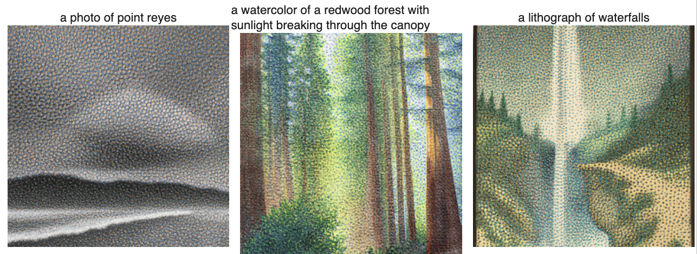
num_inference_steps = 5
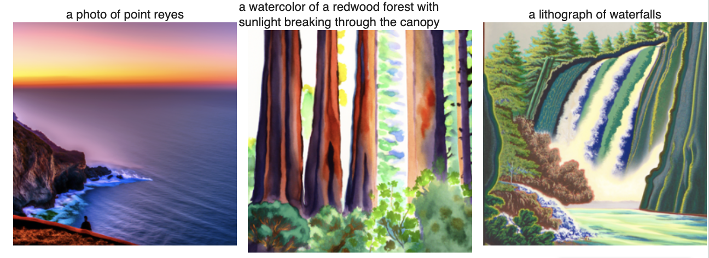
num_inference_steps = 20
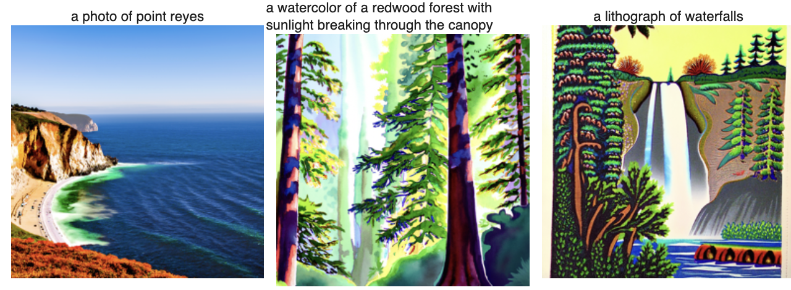
num_inference_steps = 50
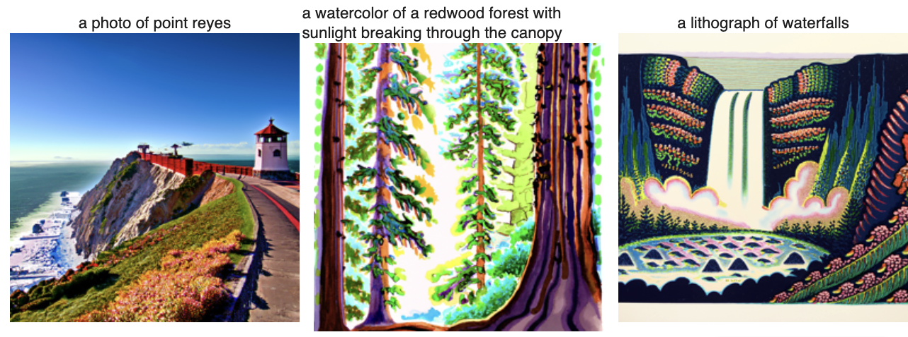
num_inference_steps = 100
Part 1: Sampling Loops
1.1 Implementing the Forward Process
In the forward process, we add noise to a clean image. For a given timestep t, it scales the clean image by the
sqrt(alphas_cumprod[t]) and adds gaussian noise that is scaled by sqrt(1-alphas_cumprod[t]). I generated noisy
versions of the Campanile at timesteps t = 250, 500, and 750. As visualized below, the three images get more and
more noisy as t becomes larger where the Campanile is still quite visible at 250 but basically unrecognizable at 750:
Campanile (Original)
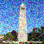
Campanile Noisey (t=250)
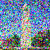
Campanile Noisey (t=500)
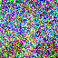
Campanile Noisey (t=750)
1.2 Classical Denoising
To denoise the noisy images I just created, I first try classical denoising. I use a Gaussian blur filter with kernel
size of 5 to try and remove the noise. These are the results:
In one-step denoising, I used the pretrained diffusion UNet to denoise the noisy Campanile images from 1.1 again.
or each of the noise levels, I applied the forward process to get the noisy images. Then I passed in the noisy image,
the corresponding timestep, and the photo’s embedding (‘a high quality photo’) into the UNet, which gave an estimation
of the Gaussian noise that had been added. To get the predicted original image, I scaled and removed the predicted
noise using the same equation as 1.1.
To make sure the denoising still performs well when there is a lot of noise, I implemented iterative denoising.
I created a list that stored the decreasing timesteps from 990 to 0 with a stride of 30. From a given start index
in this list to the end of the list, I iterated through and used UNet to predict the noise, and then denoised
using the following formula:
I used a start index of timestep 10 to run the iterative_denoise function. Below shows every 5th image from the
denoising loop as well as comparisons to gaussian blurring and one-step denoising. From the results we see that
the output from iterative_denoise produces a cleaner original image that has more details in the structure which
is an improvement from one-step denoise, which is also much better than gaussian blur.
In this part, instead of adding noise to a pre-existing image, I generated random noise and used the prompt ‘a high
quality photo’ and i_start=0 to generate 5 different images using iterative_denoise. Here are the images that were
generated:
Sample 1 Sample 2 Sample 3
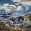
Sample 4 Sample 5
The images produced are decent, but not high quality images.
1.6 Classifier-Free Guidance (CFG)
To improve the quality of the images, I implement classifier-free guidance where I compute the conditional and
unconditional noise estimate at each step and sum the unconditional noise estimate with the difference between
conditional and unconditional noise estimates scaled by a strength controlling the CFG. When the strength is 0,
there is unconditional noise estimate and at strength=1 it is conditional noise estimate. When strength > 1, the
images have much higher quality.
Below shows the 5 images with the prompt ‘a high quality photo’ using a CFG strength scale of 7. The results
produced are clearer than the section above but I also noticed that most are of human / animal figures rather
than nature views:
Sample 1 Sample 2 Sample 3 Sample 4 Sample 5
1.7 Image-to-image Translation
For image-to-image translation using CFG, I added various amounts of noise using the same forward function to an image
and denoised it with the diffusion model. I used the same prompt ‘a high quality photo’ as the conditioning. From
the results, we can see that when the noise is low the outputs look very similar to the original image, at least
maintaining the same type of object. However at larger noise levels, images became completely different than what
was expected.
Below shows edits of the Campanile image at the noise levels [1, 3, 5, 7, 10, 20] with the conditional text
prompt ‘a high quality photo’:
Using the same procedure, I also implemented the inpaint function that masks an image and runs the iterative
denoising process on the image but then we force what is not in the masked section to be the original image.
I used this process to edit the the image of the top of the Campanile:
Campanile (Original) Mask Hole to fill Campanile Inpainted
Here are also 2 other edits – one of a picture I took from the airplane window with a mask that covered the wing
and the edit removed the wing! The other is of a meditation tent in Costa Rica and the mask was triangular on the
tent roof:
Plane (Original) Mask Hole to fill Plane Inpainted
Costa Rica (Original)
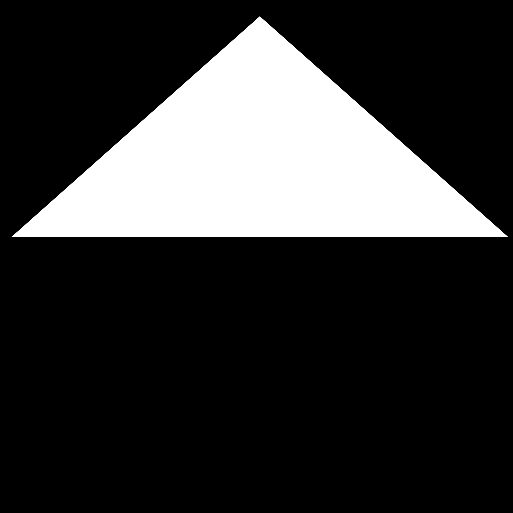
Mask Hole to fill
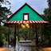
Costa Rica Inpainted
1.7.3 Text-Conditional Image-to-image Translation
For this part, I performed text-guided image-to-image translation. Instead of using the prompt ‘a high quality photo’
I used my own prompts of choice to condition the denoising process. I tried this on the Campanile image with the prompt
“a stylized ink drawing of a woman beneath cherry blossoms” and this is the results:
To create visual anagrams where the image looks like one right side up and another upside down, I implemented the
visual_anagrams function. I created a denoising for-loop that conditions the model on two different text prompts.
At each time step, the model predicts the noise in the upright image and the noise in the upside down image. I
flip the second noise estimate back and average the two estimates, and use the blended value to recover the predicted
image.
I generated 3 visual anagrams. One is of an upright image of “an oil painting of a man” when flipped becomes
“an oil painting of people around a campfire”:
Oil Painting of a Man Campfire
Another is an upright “a picture of a colorful jellyfish” when flipped becomes
“a fancy chandelier hanging from the ceiling”:
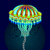
Jellyfish Chandelier
Lastly, an image upright of “a charcoal sketch of an old lighthouse battered by ocean winds”
when flipped becomes “a stylized ink drawing of a woman beneath cherry blossoms”:
Lighthouse Women Cherry Blossom
1.9 Hybrid Images
I implemented the make_hybrids function that combines low-frequency and high-frequency outputs from two model outputs.
At each denoising step, the model produces two CFG noise predictions on 2 different text prompts and I apply a high
pass and low pass filter respectively and use techniques we learned from creating hybrid images to create a hybrid
noise_estimate to guide the diffusion.
I generated 2 hybrid images. The first one I used the prompts “a lithograph of waterfalls” and “a rose garden with
blue roses” to generate a hybrid of a lithograph of waterfalls at far and a rose garden of roses growing on a
wall up close:
Waterfall (far) Rose Garden (close)
The second hybrid image I used the prompts “a picture of a colorful jellyfish” and “a watercolor of a redwood forest
with sunlight breaking through the canopy” to generate a jellyfish at far and the redwood forest up close:


.png)
.png)